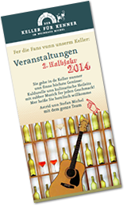
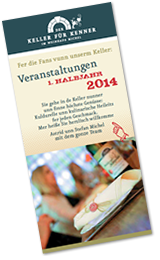

Weinselige Termine, die Sie nicht verpassen sollten
Der Keller für Kenner
Veranstaltungen 1. Halbjahr 2014
Januar |
|
Mi., 15.01.2014
|
„Schotten dicht“ - Peter Jackob liest aus seinem neuen Krimi!!In seinem 3. Fall ist Bekker als Kreuzfahrtpassagier auf dem Rhein unterwegs. Während der Reise erkranken zahlreiche Personen an einem Magen-Darm-Virus. Als ein Mann an den Folgen stirbt und kurz darauf ein Mord geschieht, ahnt Schack, dass er an Bord gegen weit mehr als nur gesundheitliche Beschwerden zu kämpfen hat … Lesung: 5,00 € |
Mo., 20.01.2014
|
Wein und Wörter - Bücherei am Dom im Weinhaus MichelAktuelle Informationen zur Lesung finden Sie sechs Wochen vor dem Termin auf: www.bistum-mainz.de/buecherei-am-dom Lesung: 5,00 € |
Fr., 24.01.2014
|
„Geh’n Se doch zum Lache in de Keller!“Wolle mer Se roilosse? Hildegard Bachmann und Herbert Völkner, ein lustiges Gespann, fastnachtlich und mundartlich unnerwegs. Eintritt: 14,00 € |
Februar |
|
Mi., 05.02.2014
|
Lothar Schöne liest aus seinem Kriminalroman:
|
Do., 13.02.2014
|
Trio "SELTSAM!" - unplugged im KellerSabine Lambert, Holger Föschler und Wolle Moses durchwandern musikaliasche Landschaften des Pops, Jazz und Souls akustisch und in ihrer ganz eigenen Art. Kompositionen mit Gesang, Gitarre, Saxofon, Querflöte und Cajon versetzen den Keller in wohltuende Schwingungen. |
Sa., 15.02.2014 |
Ritzamboo – De Fassenacht uff de Grund gehe! (Start im Weinhaus Michel, Dauer: ca. 3,5 Std.) Preis pro Person: 28,00 € |
Mo., 17.02.2014
|
Autorengespräch und Signierstunde mit Peter Jackob in unserer Lounge »Schotten dicht - Schack Bekker ermittelt auf dem Rhein«Dort erfahren Sie Hintergründe über die Entstehung des neuen Bekker-Krimis, außerdem liest er einen Ausschnitt daraus, beantwortet Fragen und signiert natürlich auch. Der Eintritt ist frei. |
März |
|
Do., 27.02.2013 |
Fassenacht
|
Mo., 10.03.2014
|
Wein und Wörter - Bücherei am Dom im Weinhaus MichelAktuelle Informationen zur Lesung finden Sie sechs Wochen vor dem Termin auf: www.bistum-mainz.de/buecherei-am-dom Lesung: 5,00 € |
Sa., 22.03.2014
|
BILLY CRASH "En long, longe Weesch" - die Jubiläumstour!Seit 50 Jahren steht er als Mundart-Musiker Urgestein auf der Bühne und zelebriert den Rhoihesse-Blues. Die Musik von Billy Crash wurzelt nämlich dort, wo die gesamte Rock-und Popmusik ihren Ursprung hat: im Blues, in der Country-music und im Rock´n Roll. Seine neue Platte „Long, longe Weesch“ ist dafür klingender und textlicher Beweis. Eintritt: 10,00 € |
April |
|
Do., 10.04.2014
|
The Positrons play The Beatles plugged and unplugged!!Die sympathische vierköpfige Band The Positrons aus Mainz steht für Beatles-Cover in akustischer Manier. Eintritt: 10,00 € |
Mai |
|
Do., 01.05.2014- |
Genießen Sie Michel-Wein am Rhein!
|
Mo., 12.05.2014
|
Wein und Wörter - Bücherei am Dom im Weinhaus MichelAktuelle Informationen zur Lesung finden Sie sechs Wochen vor dem Termin auf: www.bistum-mainz.de/buecherei-am-dom Lesung: 5,00 € |
Fr., 16.05.2014
|
Sommerweinprobe mit „Strictly Guitar“ – Weine für Terrasse und Ferienfeeling!Tillman Suhr und Kai Habeth interpretieren mit ihren akustischen Gitarren Jazz-, Rock-und Bluesklassiker auf ihre ganz eigene Art – und zwar live, mit Leidenschaft und großer Spielfreude! Dazu moderieren wir eine Verkostung mit 6 Weinpersönlichkeiten und unsere Küche zaubert passend dazu 6 köstlich-sommerliche „Rhoihesse-Tapas“. Preis pro Person: 43,00 € |
Mi., 21.05.2014
|
Ein Genuss für die ganze Familie:
|
Juni |
|
Sa., 28.06.2014
|
Mogontiacum – auf den Spuren der Römer – eine außergewöhnliche StadtführungDie Bedeutung von Mogontiacum in der Römischen Antike lässt sich im heutigen Mainz nur erahnen. Klaus Wilms macht Geschichte in einer spannenden Stadtführung lebendig: Drusus-Stein, Römisches Bühnentheater, Kästrich. Die Michels überraschen Sie unterwegs mit Wein und römischen Leckereien. Ein kulturelles und kulinarisches Vergnügen! Preis pro Person 33,00 € |
Der Keller für Kenner
Veranstaltungen 2. Halbjahr 2014
Juli |
|
Mi., 16.07.2014
|
Buchtaufe: "Schandgold"- Ernestine Nachtigall geht auf SchatzsucheVon und mit dem Mainzer Autor Helge Weichmann Wer zu tief gräbt, weckt die Vergangenheit. Ein rätselhafter Brief führt die Historikerin Tinne und den Reporter Elvis kreuz und quer durch Oppenheim. Sie jagen einem Geheimnis nach – zwölf silbernen Apostelfiguren, die seit dem 30jährigen Krieg im Kellerlabyrinth unter der Stadt versteckt sein sollen. Lesung: 5,00 € |
September |
|
Mo., 08.09.2014
|
Traumstadt Venedig? Eine literarische SpurensucheDas Wein und Wörter – Team der Bücherei am Dom entführt Sie an diesem Abend auf literarische Pfade außerhalb der üblichen Geschichten über die Lagunenstadt. Streifen Sie mit uns über den Markt, steigen Sie in eine Gondel, lauschen Sie den Glocken dieser faszinierenden Stadt. Lesung: 5,00 € |
Do., 11.09.2014
|
„Vun de Lung uff die Zung!“Hildegard Bachmann liest alte Meenzer Geschichte und Gedichte, vum Newweling, vun Haamweh un Widderkumme, liebevoll ausgesucht, damit se nur net vergesse gehe. Lesung: 10,00 € |
Do., 18.09.2014
|
„Göttingen – oder Pierre et Lys“Die französische Sängerin und Komponistin Monique Serf (1930 – 1997), die unter ihrem Künstlernamen Barbara berühmt wurde, begann ihre Karriere 1950 in Brüssel mit Chansons von Edith Piaf und Juliette Gréco. Als sie nach Paris zurückkehrte, traf sie auf Jacques Brel und Georges Brassens. Zu Ehren von Barbara singt Susanne L. Reifenhäuser deren einzigartige Chansons in französischer und deutscher Sprache. Originell verknüpft sie die Inhalte der Lieder mit der Geschichte von Pierre aus Göttingen und der Französin Lys. Die beiden verbindet eine ganz besondere Liebe - über Grenzen hinweg. Eintritt: 10,00 € |
Do., 25.09.2014
|
The Positrons play The Beatles plugged and unplugged!! Die sympathische vierköpfige Band The Positrons aus Mainz steht für Beatles-Cover in akustischer Manier. Eintritt: 12,00 € |
Oktober |
|
So., 12.10.2014
|
Huub Dutch Duo – „Jetzt kübelt’s!“Swingende Chansons aus eigener Feder -
|
Mi., 15.10.2014
|
"Noch'n Gedicht" – ein Porträt des großartigen Humoristen Heinz ErhardtÜber 30 Jahre ist er nun schon tot, aber Heinz Erhardt ist heute noch ein bekannter und beliebter Kabarettist,Dichter, Musiker und Entertainer. "Die Dichterpflänzchen" präsentieren Gedichte, Anekdoten und Auszüge aus seiner Autobiografie. Lesung: 7,00 € |
Sa., 18.10.2014
|
BILLY CRASH "En long, longe Weesch" - die Jubiläumstour!Seit 50 Jahren steht er als Mundart-Musiker Urgestein auf der Bühne und zelebriert den Rhoihesse-Blues. Die Musik von Billy Crash wurzelt nämlich dort, wo die gesamte Rock-und Popmusik ihren Ursprung hat: im Blues, in der Country-music und im Rock´n Roll. Seine neue Platte „Long, longe Weesch“ ist dafür klingender und textlicher Beweis. Freuen Sie sich auf den Rock und Blues des Rhein-Nahe-Deltas! Eintritt: 12,00 € |
FR., 31.10.2014
|
Liebe, Leidenschaft und Wein – ein Abend mit Edgar Allan PoeHeike Mayer-Netscher und ihr Team werden Sie an diesem Abend zu den Abgründen des Edgar Allan Poe mitnehmen. Poe war ein Genie (zumindest hielt er sich dafür), ein Lebemann, ein Hochstapler und Frauenheld, vielleicht Alkoholiker. Sein Leben war mindestens genauso spannend wie seine Geschichten. Mit einer Mischung aus biographischen Details und Ausschnitten aus seinem Werk entführen wir Sie einen Abend lang in die gruselige Welt des E. A. Poe. Dazu präsentiert Ihnen das Weinhaus Michel schaurig-leckere Herbstspezialitäten à la carte. Lesung: 7,00 € |
November |
|
Di., 04.11.2014
|
In der Veranstaltungsreihe „Rheinhessen liest“:Das Leben nach der Todgeburt.Eine Balkan-Familien-Sagavon und mit Andelka Kriazanowic Der Balkan des zwanzigsten Jahrhunderts ist ein einziges Spielbrett, auf dem sich Gottvater der Allmächtige und sein Gegenpart, der kommunistische Landesvater, eine große Partie liefern. Neugeborene und Kinder, Großmütter und -väter, Pfarrer, Ärzte, ja selbst Diktatoren: Sie alle verkommen zu Spielfiguren unter Einsatz ihres Lebens. In ihrem Debüt-Roman nimmt die Autorin ihr Publikum mit auf eine Reise an Orte, an denen die Membran zwischen Leben und Tod besonders dünn zu sein scheint. Dazwischen leben vergangene Zeiten, Persönlichkeiten und Weltanschauungen auf, deren Nachbeben die Menschen auf dem Balkan heute noch spüren. Anđelka Križanović, 31, wurde im zentralbosnischen Zenica geboren. Mit neun Jahren kam sie als Flüchtlingskind nach Deutschland. Sie hat in Schwäbisch Gmünd, Stuttgart, Trier, Sydney und Mainz gelebt. Die Jungautorin wurde 2013 mit dem Mainzer Literaturpreis für junge Autoren ausgezeichnet. Eintritt: 5,00 € |
WICHTIGER HINWEIS | Leider können die zwei Chansonabende „C’est si bon“ – Wein und Chansons in Michels Keller!“am Do., 06.11.2014 und Fr., 07.11.2014 jeweils 19.30 Uhr wegen Krankheit nicht stattfinden. Wir bitten um Ihr Verständnis und bieten Ihnen folgendes Ersatzprogramm: |
Do., 06.11.2014
|
ENTFÄLLTAufgrund der großen Nachfrage nochmal gleich zwei Abende mit ...„C’est si bon“ – Wein und Chansons in Michels Keller!Matthias Kippert (Gesang, Gitarre), Axel Lorth (Gesang, Gitarre, Cajon) und Stefan Kortenbusch (Gesang, Klavier) sind verliebt in die französische Chansonkultur. Als Trio „Les Voisins“ singen und spielen sie einfühlsame Bearbeitungen von Chanson-Klassikern, z.B. von Charles Aznavour, Edith Piaf, Charles Trenet oder aus dem Repertoire von Yves Montand. Eine charmante und zu Herzen gehende Liebeserklärung an eine großartige Musiktradition, die von den „Voisins“ auch mit neuen Ideen belebt wird. Eintritt: 12,00 € |
Do., 06.11.2014
|
The Positrons play The Beatles plugged and unplugged!!Die sympathische vierköpfige Band The Positrons aus Mainz steht für Beatles-Cover in akustischer Manier. Die originalgetreue Umsetzung von Instrumental- und Harmoniestimmen begeistert seit einigen Jahren das Rhein-Main-Gebiet. Genießen Sie mit uns einen außergewöhnlichen Abend! Eintritt: 12,00 € |
Fr., 07.11.2014
|
Huub Dutch Duo – „Jetzt kübelt’s!“Swingende Chansons aus eigener Feder - Fetzig, romantisch, mit schlitzohrigen, intelligenten Texten Wer allen Ernstes "Wäscheleinophon" spielt, ist entweder an traditionellen Instrumenten gescheitert oder so musikalisch begabt, dass er ein eigenes Instrument erfinden kann. Huub Dutch ist definitiv Letzteres. Er braucht nur an seiner Wäscheleine zu zupfen, mit den an einen Schuh geschnürten Maracas zu rasseln und mit seiner "verbrauchten" Stimme, wie sie so typisch für Sänger wie Ray Charles ist, zu singen und schon fügt sich alles zu Musik zusammen." Eintritt: 12,00 € |
M0., 10.11.2014
|
Wein und Wörter - Bücherei am Dom im Weinhaus MichelTatiana Fürstin von Metternich-Winneburg
|
Do., 27.11.2014
|
„Alle Jahre wieder ...“Bald is es widder Weihnachte, de Schnee fällt, is dess schee, die Glocke leite, de Wind weht kalt, die Sterne konn merr seh. In de Altstadt beim Michel, im Keller dort, do treffe sich die Leit un lausche Geschichte von Weihnachte, von heit un vergangener Zeit. Do is es kuschelich un warm, do kimmt de Mensch zur Ruh, genießt soin Schoppe, soi Wortschebrot un heert voll Wonne zu. Weihnachtliche Geschichten, lustig und besinnlich liest für Sie Hildegard Bachmann. Lesung: 10,00 € |
Download Flyer 2. Halbjahr 2014
Download Flyer 1. Halbjahr 2014
„Bei uns unne im Keller finne Se Woi unn Kuldur discht beienanner.
Aach des leiblische Wohl kimmt hier net zu kurz."
Karten für alle Veranstaltungen erhalten Sie bei uns im Weinhaus.
Gerne reservieren wir Ihnen Ihre Termine telefonisch, die Karten sollten jedoch bitte eine Woche vor Veranstaltung bei uns im Weinhaus abgeholt werden.
Schauen Sie doch immer mal wieder auf unsere Webseite, hier finden Sie die aktuellen Termine und viele Informationen.
Ach übrigens:
Ob mit 30 oder 60 Personen, im historischen Gewölbekeller lässt es sich wunderbar feiern. Geburtstage, Hochzeiten, Geschäftsessen, Seminare oder Weihnachtsfeiern – in den Mauern des ehemaligen Klosters Jakobsberg fühlt man sich rundum wohl.
Sprechen Sie uns an, wir beraten Sie gerne.
* Einlass ist eine Stunde vor Veranstaltungsbeginn. Es werden bereits Getränke und Speisen serviert.